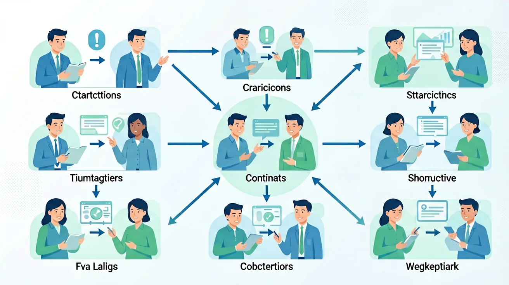

1. 你能举出一个病句的例子吗？2. 你知道什么是句式变换吗？3. 你能将'老师表扬了学生。'转换为被动句吗？
1. 修改病句：'通过这次活动，使我学到了很多知识。'2. 将'小猫吃掉了鱼。'转换为被动句。3. 将'所有人都同意这个方案。'转换为否定句。
错因：学生在修改病句时容易忽略句子的逻辑关系，导致修改后的句子仍然存在问题。误区：认为只要句子通顺就不是病句。诊断：需要从语法、逻辑和表达三个维度全面分析句子，确保修改后的句子既通顺又符合逻辑。
迁移挑战：设计一个包含主动句、被动句、肯定句、否定句的短文，并分析每种句式在短文中的作用。
先独立作答，再点选项查看对错与错因。
下列句子中，没有语病的一项是：
将句子'他不仅会唱歌，还会跳舞。'改写为否定句，正确的是：
下列句子中，句式变换正确的一项是：
将句子'他不仅会唱歌，还会跳舞。'改写为疑问句：____
答案：他不仅会唱歌，还会跳舞吗？
在句末加上'吗'，可以将陈述句变为疑问句。
将句子'他因为生病，所以没有来上课。'改写为因果倒装句：____
答案：因为他生病，所以没有来上课。
将'因为'提前，形成因果倒装句。
下列哪一项是关于病句修改的正确描述？
请分析病句修改与句式变换在语文学习中的作用和联系。
❓ 为什么我总看不出句子哪里有病？
❓ 把长句变短句有什么技巧吗？
❓ 句式变换后意思变了怎么办？
学完这一课，这些问题你都能自信地回答。
🎯 能说出病句的4种常见类型
🎯 能判断句式变换是否改变原意
🎯 能分析长句拆解的逻辑层次
用语法树拆解句子成分，定位病灶
成分残缺/搭配不当等错误本质是逻辑断裂
对比原句与修改版，体会表达效果差异
从作家手稿中观察病句修改的真实案例
将新闻长句改写为微博体短句群
✅ 需同时满足语法/逻辑/习惯
💡 忽略语义矛盾（如'太阳从西边升起'）
✅ 可增删虚词调整语序
💡 混淆'原意'与'原词'
口诀：主谓宾，定状补，成分齐全才牢固
类比：病句像拼错乐高，缺件或插错都搭不好
下列哪项属于搭配不当类病句？
将'虽然...但是...'改为因果复句时：
（高考题）文中画线句'由于...的原因，造成...'的语病类型是：
将科技文长句'基于...理论，通过...方法，本研究...'改写为短句群，最佳方案是：
为'抗疫标语'变换句式（原句：戴口罩是阻断病毒传播的有效方式），最不符合情境的是：
And：学生已能识别简单语病
But：但常混淆成分残缺/搭配不当/逻辑混乱
Therefore：需系统掌握三大病因特征
成分残缺像'缺胳膊少腿'，如'通过这次班会，使我们认识到环保重要'（缺主语，应删'使'）；搭配不当是'乱点鸳鸯谱'，如'提高学习效率和方法'（'提高'与'方法'不搭）；逻辑混乱是'前言不搭后语'，如'他虽然是学霸，所以体育也很好'（'虽然'与'所以'矛盾）。三者占比约4:3:3。
🌍 就像组装乐高：少零件（残缺）、插错孔（搭配）、说明书步骤矛盾（逻辑）都会导致失败。
选出病因不同的一项：
And：学生已会基本句式转换
But：但长句化短句时易丢失原意
Therefore：需掌握'拆-调-连'三步法
长句化短要'拆骨架'：先找主干（谁+做+什么），再剥离修饰。例如'那位戴着黑框眼镜、刚从北京回来的语文老师正在批改作业'可拆为：①语文老师批改作业（主干）②她戴着黑框眼镜（修饰1）③她刚从北京回来（修饰2）。注意保留原句90%以上信息量，调整后每短句不超过15字。
🌍 类似快递打包：大箱子（长句）拆成小包裹（短句），所有物品（信息）一件不能少。
将'在疫情期间，许多原本依赖线下授课的老师们迅速掌握了使用钉钉、腾讯会议等软件进行直播教学的技能'化为3个短句：
